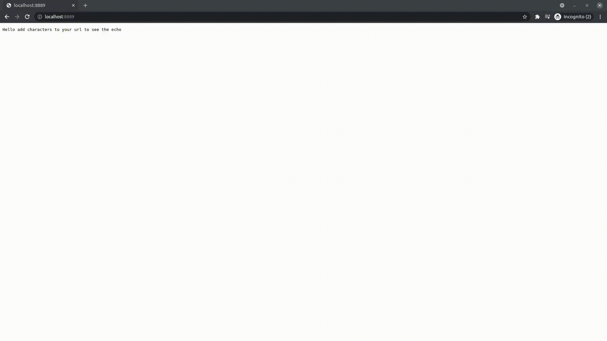

Building a simple python epoll server
How can you make your python server fast? One method is through using the Linux system call epoll. Epoll is an I/O event notification system that monitors file descriptors of I/O events.
In your first foray into writing python http servers you will likely encounter or write a simple program as seen below:
Simple socket server for one client
import socket
HOST = "127.0.0.1" # Standard loopback interface address (localhost)
PORT = 9999 # Port to listen on
s = socket.socket(socket.AF_INET, socket.SOCK_STREAM)
s.bind((HOST, PORT))
s.listen()
conn, addr = s.accept()
with conn:
print(f"Connected by {addr}")
while True:
data = conn.recv(1024)
if not data:
break
conn.sendall(data)
After understanding the basics of creating, listening, accepting and writing to a python socket the most obvious question will be how do I serve multiple clients?
One answer to this is epoll. Before we get to that though, we must examine why the above code can only serve one client. The reason is that the code is blocking and only accepting one connection.
By blocking we mean that for the lines conn, addr = s.accept and data = conn.recv(1024) the program will not continue until the completion of each event. Likewise, the program is only accepting one connection until it completes and exits. Even if the code is put into an infinite loop the server will still only be able to accept one connection or client at a time.
When we are planning how to create a useful server and thinking how to counter the issues mentioned above we may think of multiple points that must be addressed in creating a multi-client server:
- Socket accept should be able to accept multiple clients instead of waiting for one
- Handling the connection can cause server to slow down or even block
- Receiving from the client can cause server to slow down or even block
Ideally when we consider these problems we would want accepting clients, handling clients, receiving data and writing data to clients to be done fast or concurrently or both.
Such a solution may be provided through threads, but in this post we will examine using epoll. As mentioned in the introduction epoll is I/O event notification system that monitors file descriptors. That means that we can use file descriptors to represent accept and handling clients with epoll monitoring them.
To begin writing this epoll http server we must change all sockets involved in the server to be non-blocking since if the socket is blocking it may wait and slow the entire server.
Set socket to non-blocking
import socket
HOST = "127.0.0.1" # Standard loopback interface address (localhost)
PORT = 9999 # Port to listen on
s = socket.socket(socket.AF_INET, socket.SOCK_STREAM)
s.bind((HOST, PORT))
s.listen()
s.setblocking(0)
To use epoll and python we must make use of the select module whose documentation can be read here.
You can create an epoll instance by using select.epoll() and register your server socket to the instance. Next you create an infinite loop while getting a list of events through calling poll() on your instance. Then you iterate through your list of events testing and appropriately applying logic based on if the event is your server socket or if it is a read or write event.
Simple epoll server instance
import socket, select
EOL1 = b'\n\n'
EOL2 = b'\n\r\n'
response = b'HTTP/1.0 200 OK\r\nDate: Mon, 1 Jan 1996 01:01:01 GMT\r\n'
response += b'Content-Type: text/plain\r\nContent-Length: 13\r\n\r\n'
response += b'Hello, client'
HOST = "127.0.0.1" # Standard loopback interface address (localhost)
PORT = 9999 # Port to listen on
sock = socket.socket(socket.AF_INET, socket.SOCK_STREAM)
sock.setsockopt(socket.SOL_SOCKET, socket.SO_REUSEADDR, 1)
sock.bind((HOST, PORT))
sock.listen(1)
sock.setblocking(0)
epoll = select.epoll()
epoll.register(s.fileno(), select.EPOLLIN)
try:
connections = {}; requests = {}; responses = {}
while True:
events = epoll.poll(1)
if fileno == sock.fileno():
conn, addr = sock.accept()
conn.setblocking(0)
epoll.register(conn.fileno(), select.EPOLLIN)
connections[conn.fileno()] = conn
requests[conn.fileno()] = b''
responses[conn.fileno()] = response
elif event & select.EPOLLIN:
requests[fileno] += connections[fileno].recv(1024)
if EOL1 in requests[fileno] or EOL2 in requests[fileno]:
epoll.modify(fileno, select.EPOLLOUT)
print('Client sent: ' + requests[fileno].decode()[:-2])
elif event & select.EPOLLOUT:
byteswritten = connections[fileno].send(responses[fileno])
responses[fileno] = responses[fileno][byteswritten:]
if len(responses[fileno]) == 0:
epoll.modify(fileno, 0)
connections[fileno].shutdown(socket.SHUT_RDWR)
elif event & select.EPOLLHUP:
epoll.unregister(fileno)
connections[fileno].close()
del connections[fileno]
finally:
epoll.unregister(sock.fileno())
epoll.close()
sock.close()
This code is from Scott Doyle’s site which is one of the best sites for learning how to use epoll in linux. It has many wonderful examples of different implementations.
In the above code we see the basic setup of the socket and epoll. In the try block the connections, requests, and responses dictionaries are created to track the use of the client socket, the sending of response data, and the accumulation of a request. The reason these should be tracked is for the connection when it is ended the socket should be unregistered from the epoll instance. For a request, the entire request may not all be sent at once but in parts that will be appended until an end of line (EOL) is reached. For the response, all response data may not be written to a socket at once but sent in parts and as such must be tracked as a dictionary value.
To turn this into code we can use for a server library we need to create classes. First we will create a server class that will set up the server socket and register that socket to an epoll instance.
Creating a server class
import socket
import e3.loop as loop
class Server():
def __init__(self):
self.loop = loop.Loop.instance()
self._socket = None
def listen(self, port):
assert not self._socket
self._socket = socket.socket(socket.AF_INET, socket.SOCK_STREAM)
self._socket.setsockopt(socket.SOL_SOCKET, socket.SO_REUSEADDR, 1)
self._socket.setblocking(False)
self._socket.bind(("", port))
self._socket.listen(128)
self.loop.register_handler(self._socket.fileno())
self.loop.add_handler(self._socket.fileno(), self.accept_connection)
def accept_connection(self):
connection, address = self._socket.accept()
connection.setblocking(0)
self.loop.handle_connection(connection)
The e3.loop import is because this library is named e3 with a file called loop.py in it that contains the logic for the epoll instance. When a server class is initialized it will create an epoll instance by calling loop.Loop.instance(). Then by using its listen method the server’s socket will be set up and start listening. It will also register its socket file descriptor to the epoll instance.
The accept_connection method is one of the first main issues we encounter when writing an epoll server. When nothing was abstracted the epoll instance could easily register the server socket file descriptor. Only when the server class calls the listen method is the server socket created and registered to the epoll instance. How should epoll track the file descriptor and be able to call the accept method on the file descriptor to accept connections from clients?
The answer is by registering the server socket file descriptor to the epoll instance when the server first starts listening and passing a callback to the epoll instance with that descriptor to be called when an event occurs on the server socket. In addition, when this is first done in the server listen method we will also change the epoll server_fd variable to be that of the server socket file descriptor so that when the infinite loop is iterating over events it will be able to tell if the server socket has been called.
When an event has a file descriptor that is the same as the server socket the epoll instance will call the callback that accepts the connection, sets the connection socket to be non-blocking, registers the connection socket to the epoll instance and creates a value in the connections and requests dictionaries.
To understand what the epoll instance is doing see below:
The e3 epoll instance
import socket, select
EOL1 = b'\n\n'
EOL2 = b'\n\r\n'
class Loop():
def __init__(self):
self._epoll = select.epoll()
self.connections = {}
self.requests = {}
self.responses = {}
self.server_fd = -1
self._handlers = {}
@classmethod
def instance(cls):
if not hasattr(cls, "_instance"):
cls._instance = cls()
return cls._instance
def register_handler(self, fd):
self._epoll.register(fd, select.EPOLLIN | select.EPOLLET)
self.server_fd = fd
def add_handler(self, fd, handler):
self._handlers[fd] = handler
def handle_connection(self, connection):
self._epoll.register(connection.fileno(), select.EPOLLIN | select.EPOLLET)
self.connections[connection.fileno()] = connection
self.requests[connection.fileno()] = b''
def start(self):
while True:
events = self._epoll.poll(1)
for fileno, event in events:
if fileno == self.server_fd:
accept_connection = self._handlers[fileno]
accept_connection()
elif event & select.EPOLLIN:
try:
while True:
self.requests[fileno] += self.connections[fileno].recv(1024)
except socket.error:
pass
if EOL1 in self.requests[fileno] or EOL2 in self.requests[fileno]:
print(self.requests[fileno])
self._epoll.modify(fileno, select.EPOLLOUT | select.EPOLLET)
headercontent = self.requests[fileno].decode()[:].split("\r\n")[0]
url = headercontent.split()[1][1:]
if(len(url) == 0):
url = "Hello add characters to your url to see the echo"
response = 'HTTP/1.0 200 OK\r\nDate: Mon, 1 Jan 1996 01:01:01 GMT\r\n'
response += 'Content-Type: text/plain\r\nContent-Length: ' + str(len(url)) + '\r\n\r\n'
response += url
self.responses[fileno] = response.encode()
elif event & select.EPOLLOUT:
try:
while len(self.responses[fileno]) > 0:
byteswritten = self.connections[fileno].send(self.responses[fileno])
self.responses[fileno] = self.responses[fileno][byteswritten:]
except socket.error:
pass
if len(self.responses[fileno]) == 0:
self._epoll.modify(fileno, select.EPOLLET)
self.connections[fileno].shutdown(socket.SHUT_RDWR)
elif event & select.EPOLLHUP:
self._epoll.unregister(fileno)
self.connections[fileno].close()
del self.connections[fileno]
def stop(self, fd):
print("stopped epoll")
self._epoll.unregister(fd)
self._epoll.close()
Outside of the use of a callback for accepting client connections this epoll instance operates similar as the first epoll example in that once events are created for the poll() method they are iterated and tested for being the server file descriptor or read or write events. If a read event is called the instance reads from the socket until an end of line (EOL) is encountered. It parses the request and creates a response with the client url request. It then creates a write event, that when encountered by the epoll instance, will write to the client socket , in other words, echoing the request.
This can be tested out using this code:
Creating a server class
import e3
def main():
http_server = e3.server.Server()
http_server.listen(8889)
e3.loop.Loop.instance().start()
if __name__ == "__main__":
main()
Here is what it looks like in the browser:
e3 server returning client url as html
